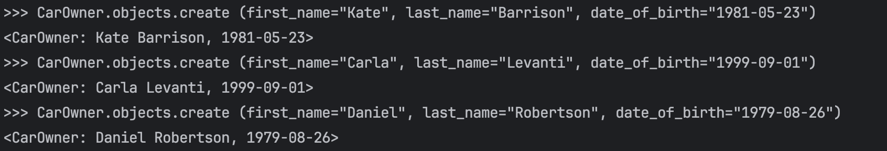
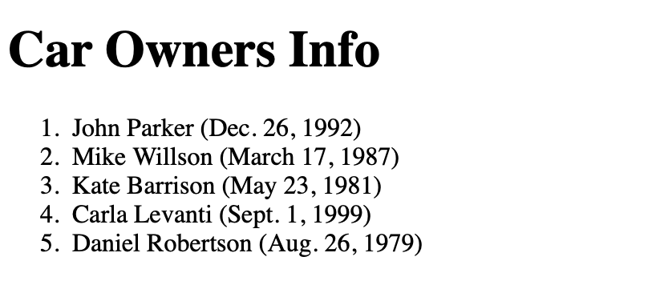
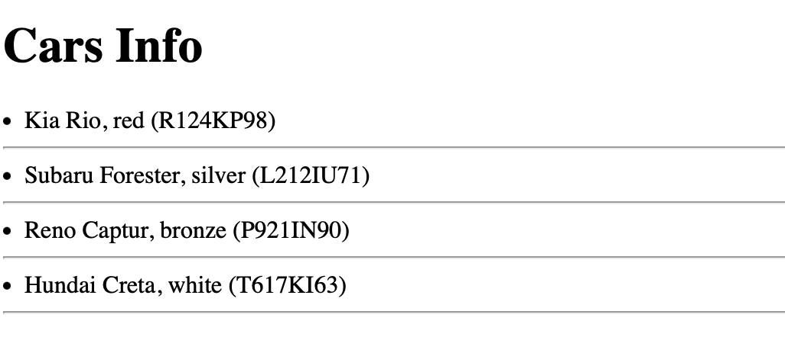
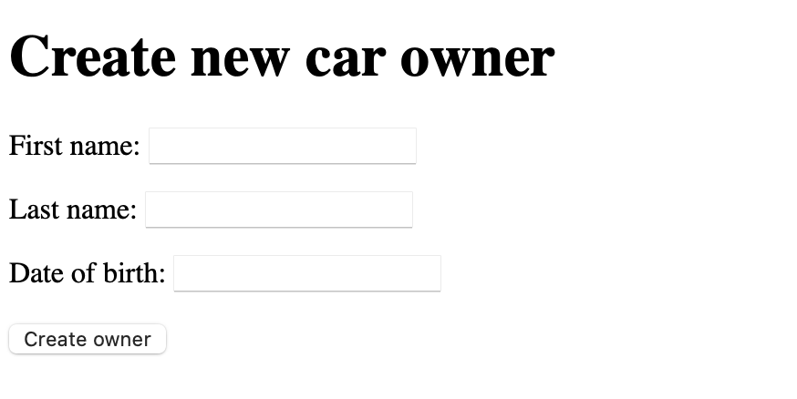

Практическая работа №2.2. "Реализации CRUD"
Цель работы: дать подробное представление о реализации CRUD(Create, read, update and delete) интерфейсов средствами Django WEB фреймворка.
Задание №1. Доработка модели данных. Реализация связи “Многие ко многим”
Необходимо правильно настроить связь между автомобилем, владением и владельцем.
class CarOwner(models.Model):
first_name = models.CharField(max_length=30)
last_name = models.CharField(max_length=30)
date_of_birth = models.DateField(null=True)
cars = models.ManyToManyField(Car, through="Possession")
def __str__(self):
return f"{self.first_name} {self.last_name}, {self.date_of_birth}"
Задание №2. Работа с представлениями
Создадим представление для вывода всех владельцев
def get_all_owners(request):
try:
all_owners = CarOwner.objects.all()
except CarOwner.DoesNotExist:
raise Http404("Empty table")
return render(request, 'all_owners.html', {'all_owners': all_owners})
После создания проекта и приложения получилась следующая структура:
Затем создадим отдальный html-шаблон для корректного вывода на странице всех данных Добавим маршрут в urls.py
urlpatterns = [
path('owner/<int:owner_id>/', views.get_owner, name='get_owner'),
path('owners/', views.get_all_owners, name='get_all_owners'),
]
Через консоль добавим данные о владельцах в нашу модель:

И проверим работоспособность написанной программы путем вывода всей информации на отдельной html странице:

Реализовать вывод всех автомобилей, вывод автомобиля по id, обновления на основе классов. Добавить данные минимум о трех автомобилях. Должны быть реализованы контроллер (views) и шаблоны (temlates).

Задание №3. Работа с формами и представлениями
Создадим форму для создания владельца
from django import forms
from .models import CarOwner
class CreateCarOwnerForm(forms.ModelForm):
class Meta:
model = CarOwner
fields = ["first_name", "last_name", "date_of_birth"]
Затем создадим создадиф функцию для обработки формы
def create_owner_form(request):
context = {}
form = CreateCarOwnerForm(request.POST or None)
if form.is_valid():
form.save()
return redirect('get_all_owners')
context['form'] = form
return render(request, "create_owner.html", context)
